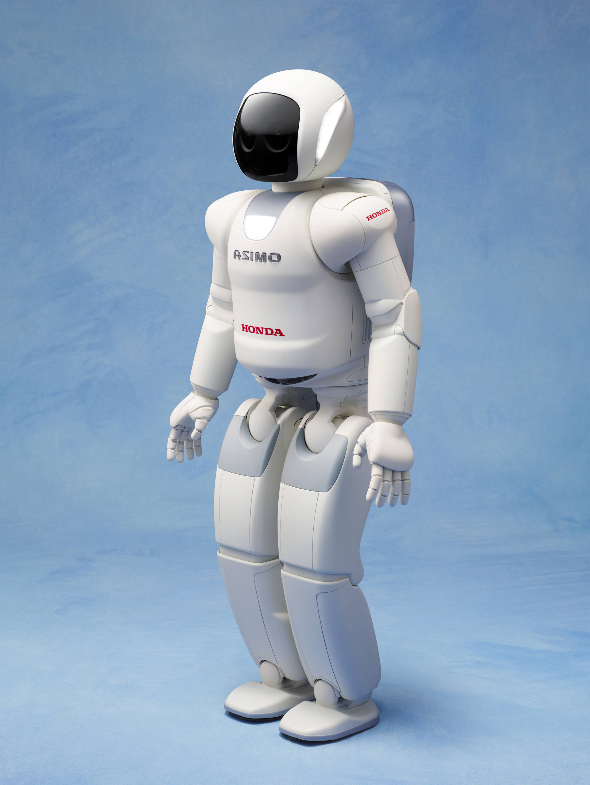
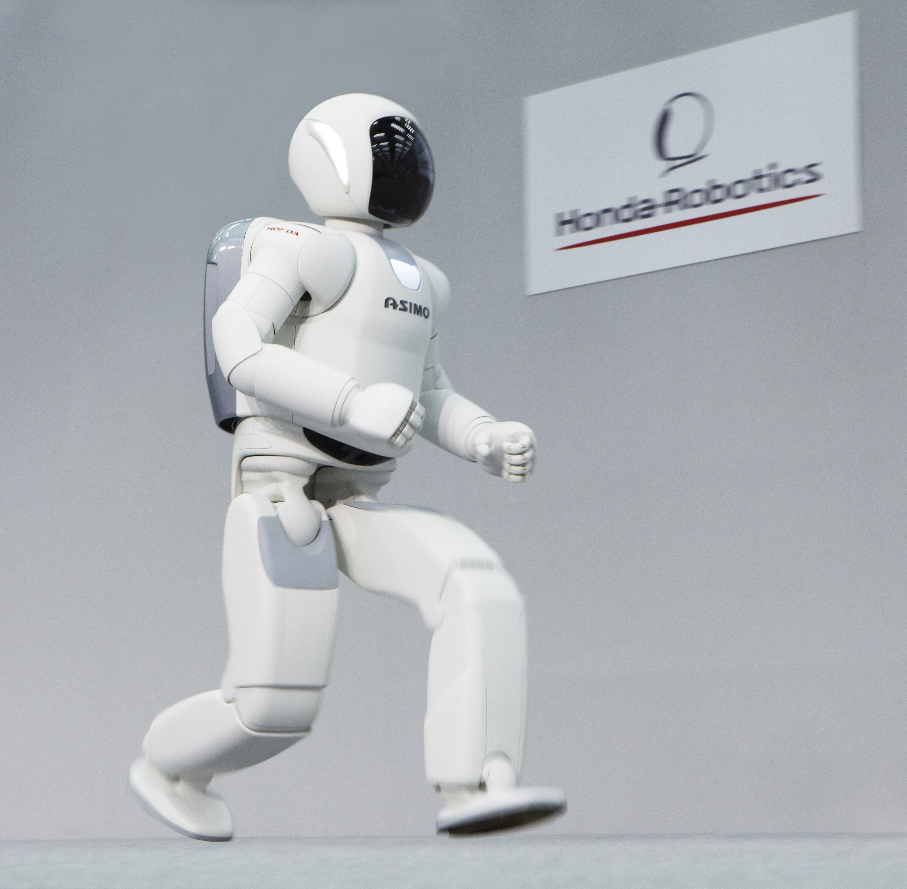
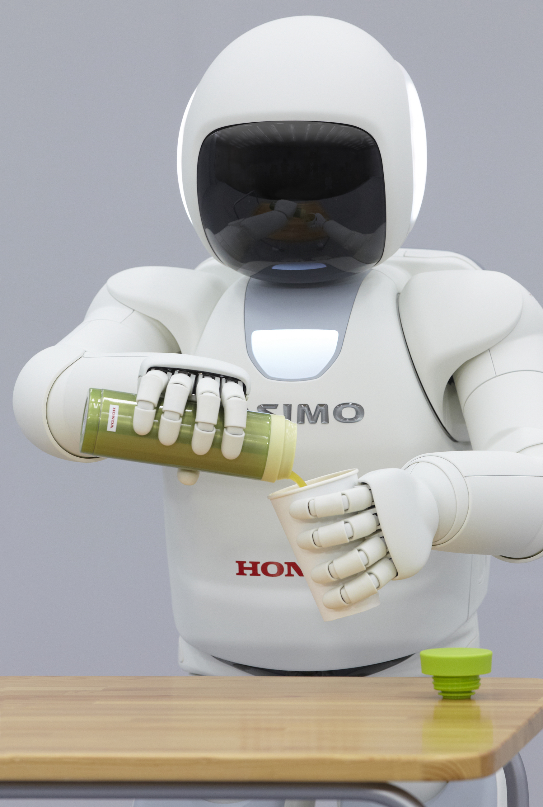
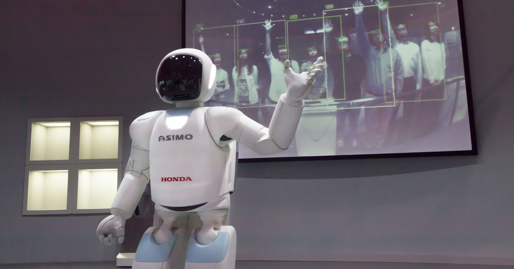
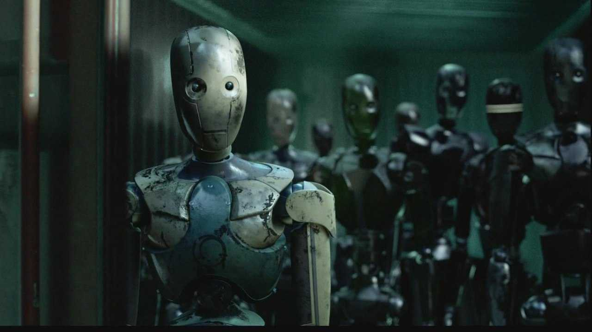

| 2000 | 2001 | 2002 | 2003 | 2004 | 2005 | 2007 | 2011 |
|---|
2011 (Version 3)
On November 8th, 2011, the third and final version of ASIMO was announced. Previously, ASIMO was considered to be an "automatic machine", a machine that can perform automatic tasks that are overseen by a human. Now ASIMO is considered an "autonomous machine", capable of completing tasks without the need to be observed by a person.
Honda's development team of ASIMO was rebranded as Honda Robotics, with a focus on applying ASIMO technologies into products such as walking assists and the UX-3 personal transporter.[1]
Hardware
While coming in at the same height as the previous model, the weigth decreased to 48 kg.[2] The overall design of ASIMO has changed a lot, all hard edges are now rounded off and a bit bubbly.
ASIMO can now run up to 9 km/h due to an overall strenghtening of the legs. The design of the leg mechanism has changed drastically. If you take a look at previous models, the knee joint is located in the center of the leg mass. Now it rotates around the back of the leg enclosure, leaving room in front for a linkage mechanism that transmits power from the motors that are located high in the thigh (to keep center of gravity high), down to the knee and the ankle (see variations section for visual representation).
As before, ASIMO is enabled to run by the inclusion of an axis at the waist. That twisting motion is known as the yaw axis. Now, ASIMO's waist is fitted with an additional pitch axis, adding more flexibility.
Each hand now has 13 degrees of freedom, allowing ASIMO to do complex hand gestures and communicate in sign language. These capabilities are enabled by the switch to hydraulically actuated fingers. Honda developed extremely compact hydraulic master cylinders (pumps), integrating a motor driven ball screw piston mechanism, 13 axis driver (one driver for each side), and combining multiple axes in one. Two groups of 13 master cylinders live on either side of its chest, behind the shoulders. Small mesh-reinforced tubes run down the arms to the fingers, routed in a way so they don't break or tangle. Each hand is now capable of of gripping with up to 1.8 kg of force. Each fingertip and wrist were fitted with six-axis force sensors and tactile sensors were placed under the skin of the palms. An electronic control unit placed inside the hand dealt with the 96 channels of signals comming from those sensors, sampling at 250 µs. Even with all of these improvements, each hand weighs just 0.38 kg.[4]
While still using stereo cameras, one of them is now equipped with a prism, splitting the image off to a secondary high resolution sensor. With this new sensor, facial recognition at farther distances is now possible.[5] On the audio side, ASIMO is equipped with 8 microphones located around its head, thoughtfully placed for optimal speech detection.
As for the computational hardware, things are more predictable. The main CPU has an increased core count and higher memory access speeds. And because of the new gait generation, ASIMO required the addition of a dedicated CPU just for the legs.
Software
New control technology enables ASIMO to change the landing position of its foot midmotion. New capabilites include running backward, hopping one or two legs while turning, and adaptively kicking a ball. As a byproduct, it can now react to changing conditions such as walking over uneven surfaces while maintaing balance.
ASIMO can now predict the walking direction of a person a few seconds ahead, quickly avoiding collisions. The previous model had similar capabilites, however, it was limited on how far ahead it could predict, resulting in slow reaction times.
The addition of dextrous hands were key to its improved interaction with the world. Now having the ability to handle complex objects, ASIMO can pick up a bottle and untwist the lid with its other hand. After placing the lid down, it can then pick up a paper cup and pour the contents of the bottle into the paper cup without spilling. Lastly, ASIMO can now communicate in both English and Japanese sign language.[6]
Using open source software developed in-house called HARK, ASIMO is capable of listening, processing, and recognizing up to 3 different people speaking at once.[7]
For someone interacting with ASIMO, there needs to be a way for them to gather some basic information. When ASIMO is ready to listen to someone, the lights on the side of it's head (like its ears) blink until speech is registered. The intensity of the light indicates at what level ASIMO is able to hear the person speaking. The light on it's chest indicates more general information. When ASIMO is interacting with people (listening, working with people), the light is green. When ASIMO is operating alone (predescribed tasks), the light is blue. Otherwise, it emits white. Lastly, during periods where it is waiting, the light will fade in and out repeatedly, indicating a breathing like animation.
Variations
The only known color variations in use were gray and light blue.

However, there were other colors shown only in a concept image shared by Honda, green and yellow.
On March 17th, 2013, two prototypes were shown off during an NHK special called "Robot Revolution: Can Robots Surpass Humans?", each with different purposes.
The first prototype is described as an "experimental humanoid robot based off of ASIMO 2011".[8] The kinematic configurations and major specifications are the same, but with the addition of one axis force sensors at the hip and both shoulders, as well as other changes that have no further detail.
The same prototype is seen in a video attached to a research paper released at the IEEE International Conference on Humanoid Robots 2017. The paper describes a method of recovering from being pushed.[8]
Both the video released by Honda Research and the video by NHK seem to show the same prototype recovering from the same type of pushes, released more than 4 years apart. During ASIMO 2011's first apperance in North American on April 19th, 2014, along with providing their versioning schema for their ASIMO models, Honda claimed that ASIMO Version 4 was in early development, possibly having a focus on dynamic recovery.[9] I believe that this "experimental humanoid robot based off of ASIMO 2011" could possibly be a very early prototype of ASIMO Version 4.
Now, the second prototype is more of a research platform for experimental technologies, such as traversing uneven terrain using a laser rangefinder array. It uses the same leg design as the first protype, but it looks to be a bit taller. The general design is very reminiscent of Honda E series robots.
Conclusion
On the June 28th, 2018, NHK broke the news that Honda was canceling further development on ASIMO, instead focusing on developing technologies that could be commercialized. Honda initially denied the claims, however on July 8th, 2018, they released an official statement confirming the cancellation of development. While the grand goal of an ASIMO in every home was sadly cut short, ASIMO inspired a generation of engineers to go out and build robots just like it. Humans will always strive to build a machine in our own image, capable of what we are and more. ASIMO was the birth of that possibility.
Will ASIMO's development ever start back up? Well, one of the biggest reasons the development stopped in the first place was because artificial intelligence was nowhere where it needed to be for it to be useful. As of 2024 there are now countless humanoid robot startups building robots that are starting to show some real world capabilities. We are still along way away from them living in our homes, but a part of me believes that if general AI research continues to progress at the rate that it is, we may see a return of the little white astronaut. In the ASIMO documentary released by Honda, Chief Executive Engineer Takahide Yoshiike believes we will see ASIMO again.
Lastly, where did all the ASIMOs go? Surely, some had broken down, some torn down and used for parts, but by 2009 there were over 100 of them. So by the time of ASIMO's discontinuation in 2018, there had to be many more. Could there be storage containers full of decommissioned ASIMOs, like that scene in I, Robot with the NS-4's. Sad to think such marvels of human ingenuity are possibly "rusting" away. So, where did they all go? We may never know.
If any one reading this has any stories or new information (w/ references), never before seen media, contacts to the team in Wako, or unique ASIMO items (operations manuals, parts, etc.), contact me.
References
- Honda Unveils All-new ASIMO with Significant Advancements
- About ASIMO
- Advancements of Physical Capabilities
- Development of New ASIMO - Realization of Autonomous Machine -
- ASIMO and Humanoid Robot Research at Honda
- Latest Version of ASIMO Makes North American Debut in New York
- Robot hearing technology installed in new ASIMO!
- Dynamic gait transition between walking, running and hopping for push recovery
- Watch the Astounding Dexterity of Honda's Dancing Humanoid Robot